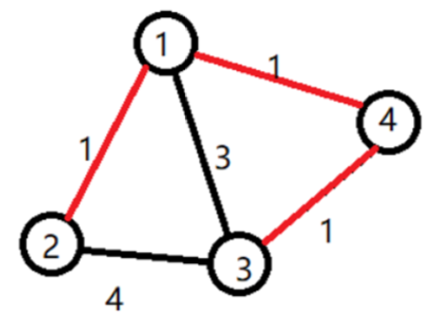
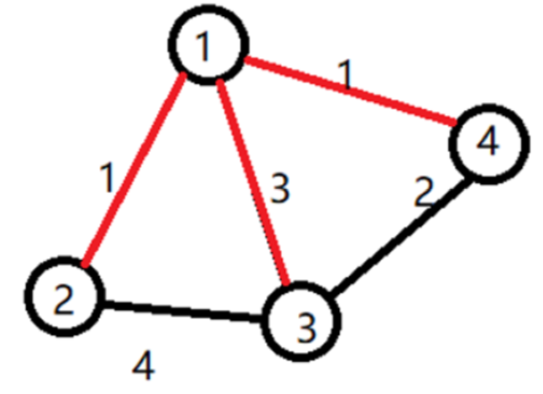

【输入输出样例 1 说明】

小明选定让赞助商打通了 $1$ 号宝藏屋。小明开发了道路 $1\to 2$，挖掘了 $2$号宝藏。开发了道路 $1 \to 4$，挖掘了 $4$号宝藏。还开发了道路 $4 \to 3$，挖掘了 $3$ 号宝藏。工程总代价为：$1×1 + 1×1 + 1×2 = 4$。
【输入输出样例 2 说明】

小明选定让赞助商打通了 $1$ 号宝藏屋。小明开发了道路 $1 \to 2$，挖掘了 $2$ 号宝藏。开发了道路 $1 \to 3$，挖掘了 $3$ 号宝藏。还开发了道路 $1 \to 4$，挖掘了 $4$ 号宝藏。工程总代价为：$1×1 + 3×1 + 1×1 = 5$。
【数据规模与约定】
对于20%的数据：
保证输入是一棵树，$1≤n≤8，v≤5000$ 且所有的 $v$ 都相等。
对于40%的数据：
$1≤n≤8，0≤m≤1000，v≤5000$ 且所有的 $v$ 都相等。
对于70%的数据：
$1≤n≤8，0≤m≤1000，v≤5000$
对于100%的数据：
$1≤n≤12，0≤m≤1000，v≤500000$
 Comet OJ
Comet OJ